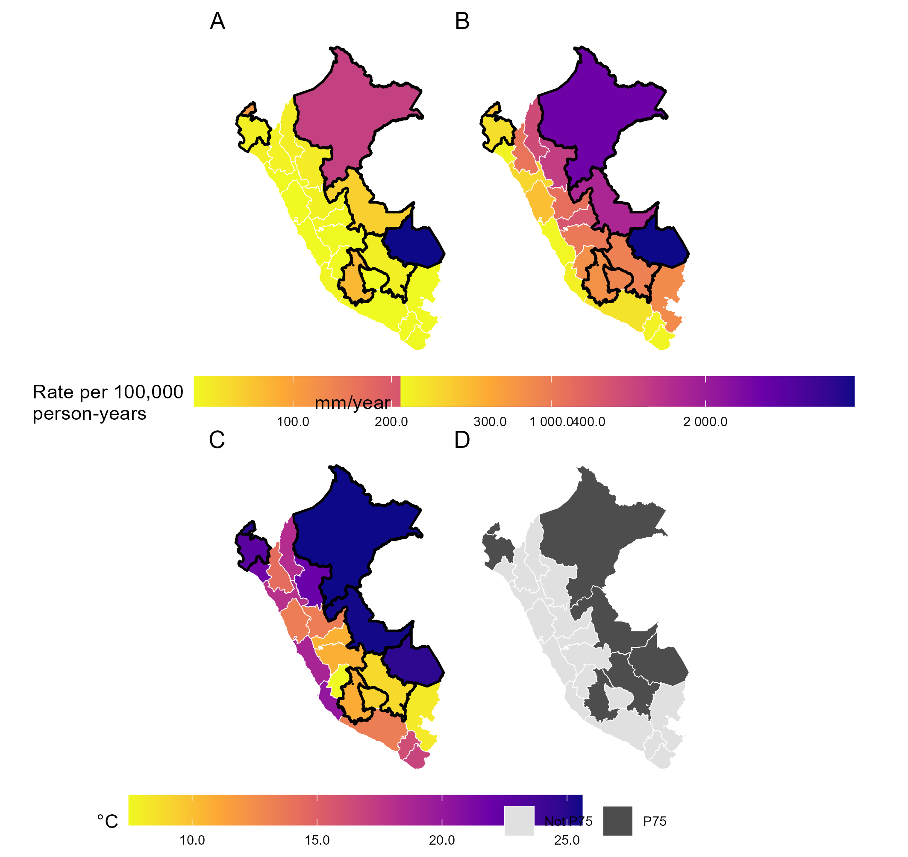
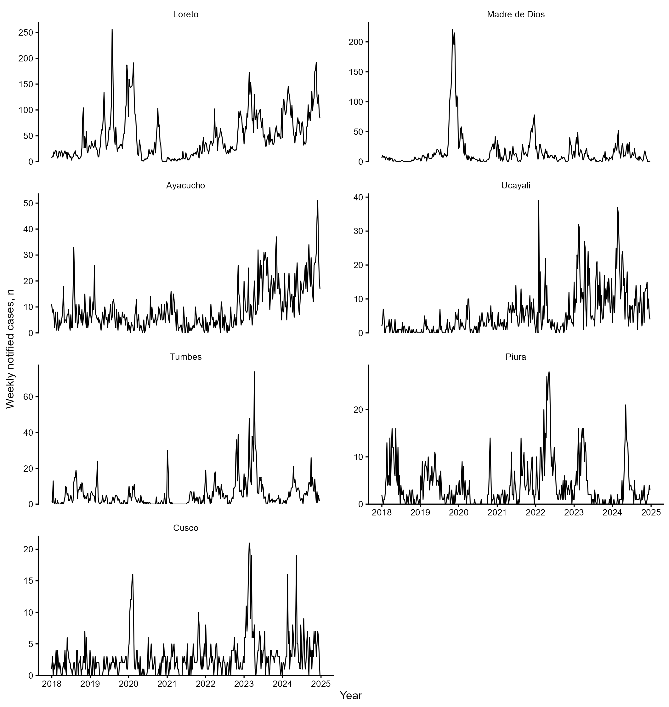
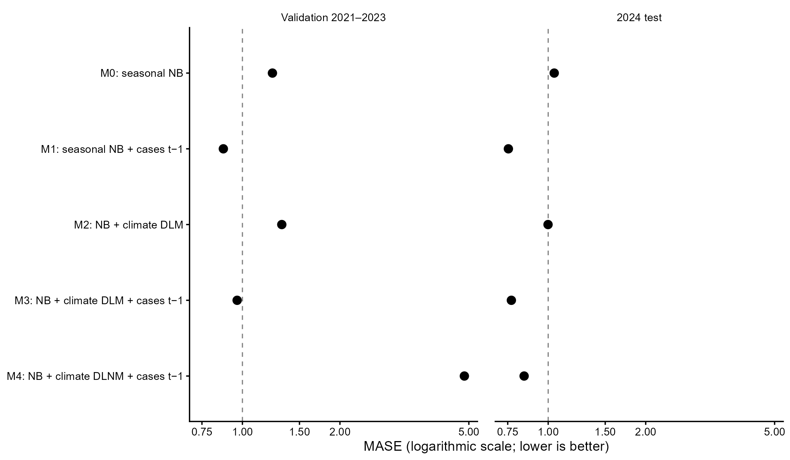
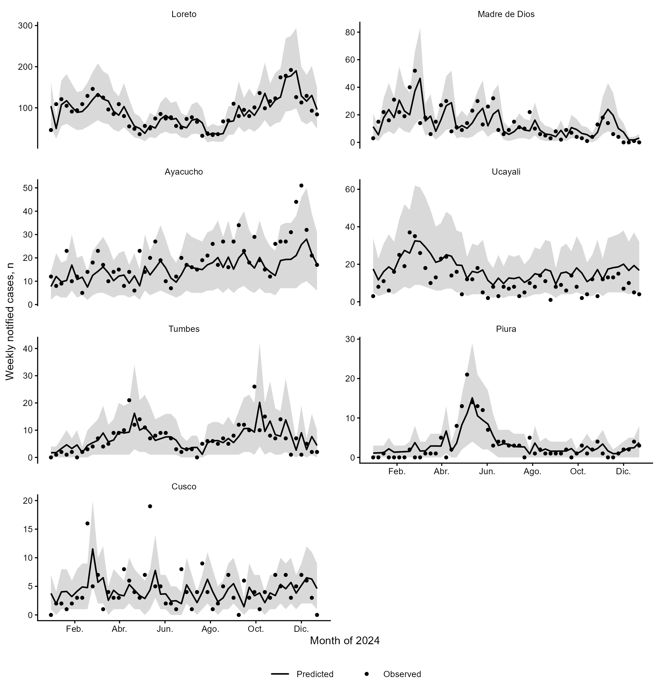

Epidemiology
Study design, analysis of health surveys and registries, surveillance and population health assessment.
Physician · RENACYT level III researcher · Lima, Peru
Epidemiology · Biostatistics · Clinical research

Profile
I am a physician and level III RENACYT researcher. I coordinate clinical trials at Instituto Nacional de Salud del Niño San Borja and teach research methods at Universidad Científica del Sur. My main fields are epidemiology, biostatistics and clinical research.
I completed the coursework for the master’s program in Clinical Epidemiology and Biostatistics; my thesis defense is pending. In 2025 I completed Principles and Practice of Clinical Research at Harvard T.H. Chan School of Public Health, and I am currently studying Data Science at PUCP.
Background
My experience includes clinical research, population data analysis, university teaching, thesis advising and scientific publication. I work primarily in maternal and women’s health, biostatistics, population health and clinical research.
Areas of work
Study design, analysis of health surveys and registries, surveillance and population health assessment.
Protocols, trial coordination, feasibility assessment, procedures and research ethics.
Analysis plans, data preparation, statistical models, interpretation and reporting.
Literature searching, critical appraisal, systematic and scoping reviews, and GRADE assessment.
Published research
These papers represent my work in maternal health, women’s health and clinical research. The academic CV includes the complete publication list.

We described changes in maternal mortality and its regional distribution between 2015 and 2019 using national records. Reported deaths fell from 415 to 302, while regional differences remained important for interpreting the national picture.
Read publication ↗
We analyzed ENDES data to study the relationship between empowerment and contraceptive use among women who had been married or lived with a partner. Use was less prevalent in the lower empowerment group (adjusted PR 0.87; 95% CI 0.81–0.93). The design identifies an association, not causation.
Read publication ↗
In this systematic review, we examined whether patient-specific 3D printed anatomical models help plan spinal deformity surgery. Six comparative studies included 344 patients. Findings suggest possible reductions in operative time and blood loss, but risk of bias limits confidence in these estimates.
Read publication ↗Ongoing research · 2018–2024
We evaluated weekly leptospirosis forecasts in Peru using notification, precipitation and temperature data. The seven highest-burden departments accounted for 87.1% of the notifications analyzed. In the 2024 test, the model including previous-week cases had the lowest error (MASE 0.754); adding climate variables did not improve this result. The persistence benchmark obtained MASE 0.777.
This finding is relevant in light of the coastal El Niño alert issued by ENFEN on 30 October 2026. The study identifies which variables worked best in a retrospective assessment; it cannot yet forecast cases during the 2027 event without further validation.
Original project figures. Results from a manuscript in editorial review; not listed among published papers.

Notification rates, precipitation, temperature and selection of high-burden departments (P75).

Weekly notifications in seven high-burden departments, 2018–2024.

Five candidate models; MASE in temporal validation 2021–2023 and the 2024 test. Lower is better.

Weekly 2024 cases and predictions from model M1; the gray band shows the 80% prediction interval where available.
Cohort figures
Time-to-first-positive-PCR analysis during the first 30 days after pediatric transplantation.
Univariable Cox models. Lines show 95% confidence intervals; points show HR estimates.
All three intervals include HR = 1. No statistically significant associations were identified; estimates are exploratory because the cohort was small and only 19 events occurred.
Original paper ↗Research and collaboration
I work from defining the research question through interpreting and communicating the results. I match the design and procedures to available data and study feasibility. When appropriate, I synthesize existing evidence before proposing a new analysis.
I identify relevant studies and document reproducible search strategies.
I review objectives, population, variables, resources and ethics.
I prepare datasets, choose methods aligned with the question and interpret their limits.
I conduct systematic or scoping reviews and assess certainty when appropriate.
I prepare tables, results and discussion in precise, transparent language.
I prepare manuscripts and support editorial revision and responses.
Teaching and advising
I advise medical and other health sciences students, particularly those at Universidad Científica del Sur, on projects and theses in maternal health, women’s health, population health, biostatistics and clinical research. I teach Research Methods, Thesis I and Thesis II at the university.
vromanl@cientifica.edu.pe ↗Tell me your question, project stage and the support you need.
Professional contact
Please include your topic, study population and current project stage. For academic collaboration, briefly describe the proposal.